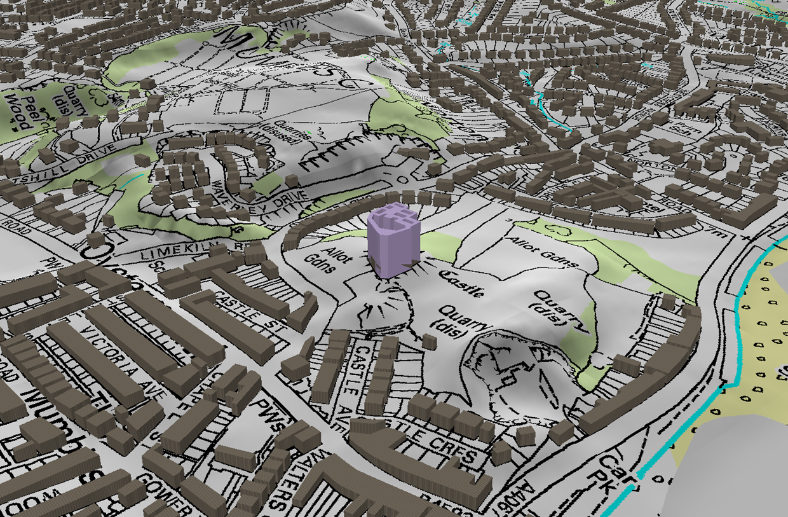
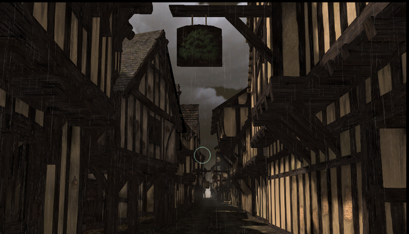

Blog
Visualisation Audiences


For my part, I feel that we need to create something visually engaging and relatively immersive for the website, not only for academic interest and the raising of new research questions, but also because of the other audience we are aiming to draw into our work – the general public.
At the National Archaeology day back in June, I spoke with a number of people about our conflicting ideas for 3D visualisations of medieval Swansea, providing them with the above examples of the two different directions we could go in (the first a quick sketch produced in the Department of Digital Humanities and King's College London, the second a highly-rendered, photo-realistic image produced by Lorenzo Caravaggi, a BA History student at Birkbeck).
On the one hand the grey boxes do not pretend to be anything other than place holders for where building would most likely have lined streets. However, even in their very absence of detail there are inherent problems with this approach. Firstly, the plain boxes suggest we do not know what the faces of the buildings would have looked like, but they do require height and depth, and these are just as unknown to us as the finer details of the outer appearance. Secondly, they can be seen as a stylised representation, a modern, minimalist interpretation of the town, which is just as problematic in its anachronistic overtones as playfully adding wooden beams to the outside of the buildings.
The alternative suggestion has been to provide something along the lines of the second picture above, with a more detailed rendering of the building, but one that is necessarily based upon speculation and what documentary evidence there is. Studying receivers accounts for Swansea in the thirteenth and fourteenth century has led to snippets of information from which we can begin this process of reconstruction. For example, there were two buildings near the bridge over the ditch between the castle and town. Between these two structures there were eight individual rentals: two cellars, four shops and two apartments over the shops. From snapshots such as this, we can then build up our knowledge of Swansea’s layout: in this case, there were shops with living accommodation above at the top end of the town nearest the castle. So for the purposes of our visualisation, we need to populate this area with two storey buildings with shops on the ground floor.
Interestingly, the majority of the public I spoke to at the museum in Swansea were far more drawn to this second representation of their city, and indeed were disappointed that I only had static shots to show them at this stage. One or two of the other exhibitors on the day who had a more informed and academic position on the subject pointed out that although they found it easy enough to engage with the grey boxes, an inhabitant of Swansea or a tourist coming to this for the first time may find the second option more immediately accessible.
Ultimately, in resolving this matter, I think it comes down to the question of who our intended audience is. With the detailed GIS maps and the edited Latin text available on the site, our academic readers will (hopefully) be well catered for. Perhaps then we need something more immediately captivating and immersive with which to draw a wider audience into the project’s aims and objectives, from which they can then go on to explore in more detail the maps and story surrounding the hanged man William Cragh.
Share on Twitter Share on Facebook